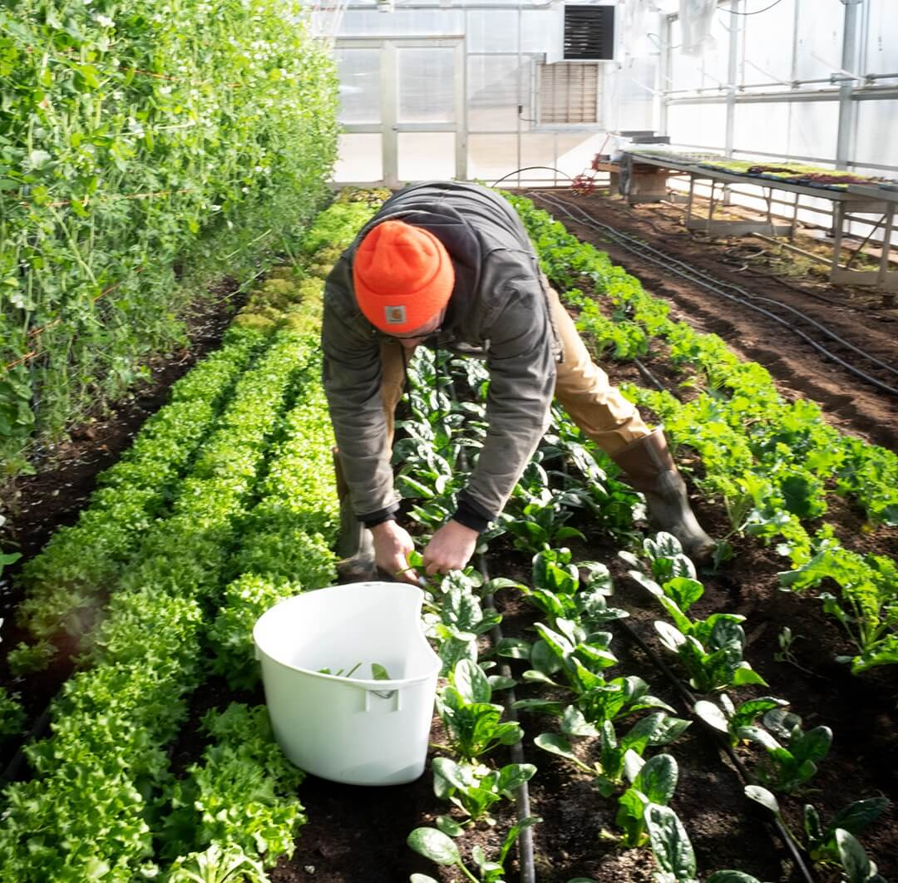

Our Products
Certified organic and "beyond organic" produce and pasture-raised meats, raised with integrity.
Shop NowWe are honored to nourish you and yours with local food straight from the source! Each farm and producer you find here is a partner because they align with our values and commitment to sustainable practices.
Certified organic and "beyond organic" produce and pasture-raised meats, raised with integrity.
Shop Now
We partner with local producers who align with our values of sustainability and compassion.
Meet ThemConvenient online ordering and home delivery. Fully customizable weekly produce boxes.
Learn MoreJoin for $99/year for free delivery, 10% off groceries, and exclusive seasonal benefits.
Join Today"Terramonga means 'the Earth among us,' which honors our relationship with this land and the sustenance it provides."
Choosing local farms means investing in a system that touches everything around us. It strengthens our food security and keeps money circulating within our community.
As ecosystems restore themselves, we are building a resilient system that can truly sustain this region for generations to come.
Support Local